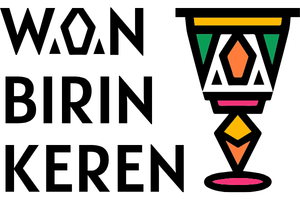
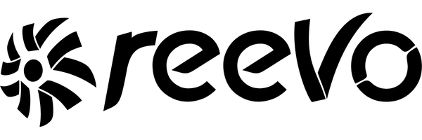
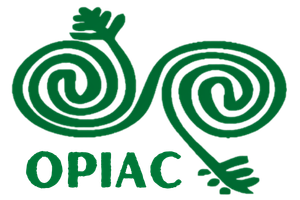
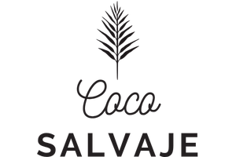
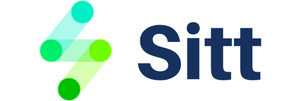
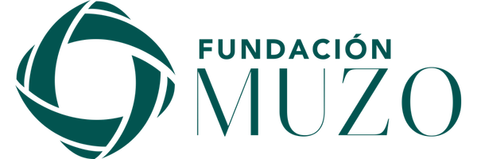
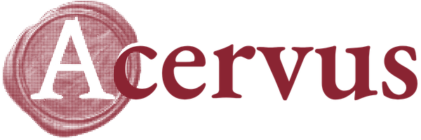
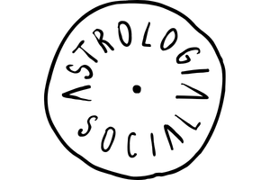

Comunicación, tecnología y autonomía
Tecnología que acompaña, no que impone.
Somos tecnosocial: un equipo remoto en Latinoamérica que camina junto a organizaciones sociales, cooperativas y comunidades en su comunicación y su relación con la tecnología. No traemos "desarrollo" desde afuera — fortalecemos las formas de autonomía que ya existen en cada territorio.
Sin sede fija — trabajo en línea, tiempos propios y comunicación sincera.








Nuestro enfoque
No creemos en una sola forma de estar en el mundo.
Entendemos el diseño y la tecnología como prácticas políticas, no neutrales — nunca como un molde único que se aplica igual en cualquier lugar. Cada comunidad tiene sus propios saberes, ritmos y formas de habitar su territorio, y ahí empieza nuestro trabajo.
Diálogo de saberes
No extraemos información para traducirla en "insights". Escuchamos las narrativas propias de cada comunidad —orales, corporales, territoriales— antes de nombrar cualquier problema.
Autonomía, no dependencia
Priorizamos herramientas de código abierto y preguntamos siempre quién es dueño de la información: cada proyecto debe fortalecer la capacidad de decidir de una organización, no volverla dependiente de nosotros ni de una licencia externa.
Muchos mundos posibles
No perseguimos la mejor solución universal. Diseñamos soluciones situadas, a la medida del territorio y de quienes las van a usar y sostener.
Tiempos propios
El diseño extractivo va rápido y se va. Nosotros sostenemos procesos con devolución de resultados, consentimiento continuo y autoría colectiva reconocida.
Qué hacemos
Dos planos que se trenzan: comunicación y tecnología propia.
Por un lado, acompañamos la comunicación de organizaciones sociales que necesitan sostener su causa en el tiempo. Por otro, acompañamos la transformación digital de comunidades: apropiación tecnológica, no imposición.
Narrativas propias
- Campañas que nacen de la causa, no de la métrica
- Pauta pensada para llegar a quienes deben saber
- Seguimiento honesto, mes a mes
- Presencia digital sin depender de terceros
- Planes de comunicación hechos con la organización
Diseño que representa
- Identidad visual que nace del territorio
- Sitios web que la organización puede sostener sola
- Fotografía que no exotiza ni idealiza
- Piezas que cuentan la historia con quienes la viven
- Audiovisuales hechos junto a la comunidad
Contenidos con memoria
- Artículos que documentan saberes propios
- Contenidos pensados por pilares, no por tendencias
- Calendarios editoriales realistas
- Publicaciones con feeling, no con fórmula
Infraestructura propia
- Tecnologías de código abierto, sin licencias externas
- Interfaces pensadas para quien las va a usar
- Desarrollo liviano, adaptado a la conectividad real
- Comercio electrónico que se queda en manos de lo local
Para quién trabajamos
Acompañamos a quienes ya están construyendo autonomía.
Organizaciones sociales
Comunicación y memoria para causas que necesitan sostenerse en el tiempo, no solo ser vistas una vez.
ONGs y fundaciones
Estrategias digitales pensadas junto a la organización, no impuestas desde afuera.
Cooperativas
Infraestructura propia para modelos de organización que ya se autogestionan.
Comercios locales
Presencia digital que fortalece la economía del barrio, no la reemplaza por plataformas externas.
Personas y comunidades
Acompañamiento uno a uno para apropiarse de la tecnología sin depender de nadie más para usarla.
Casos de éxito
Proyectos reales, hechos junto a nuestros clientes.
Un recorrido por branding, estrategia digital, growth y contenidos. Tocá cada caso para ver más y llegar a la fuente original.
Cómo trabajamos
Sin oficina fija, con un método que cuida el proceso.
Escuchamos antes de nombrar
No llegamos con un diagnóstico armado. Escuchamos qué se nombra como necesidad, y quién lo nombra, antes de proponer nada.
Co-diseñamos la agenda
Definimos juntos objetivos, metodología y uso de los resultados — no solo las soluciones finales.
Construimos con lo que ya existe
Priorizamos tecnologías abiertas y saberes locales antes que soluciones importadas.
Devolvemos y sostenemos
Entregamos resultados en formatos útiles para la comunidad y acompañamos la continuidad autónoma del proceso.
¿Charlamos sobre tu proceso?
Contanos qué necesita tu organización, cooperativa o comunidad. No prometemos soluciones universales — prometemos escuchar primero.